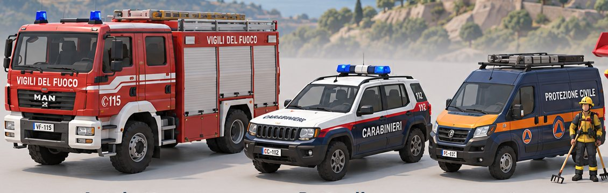
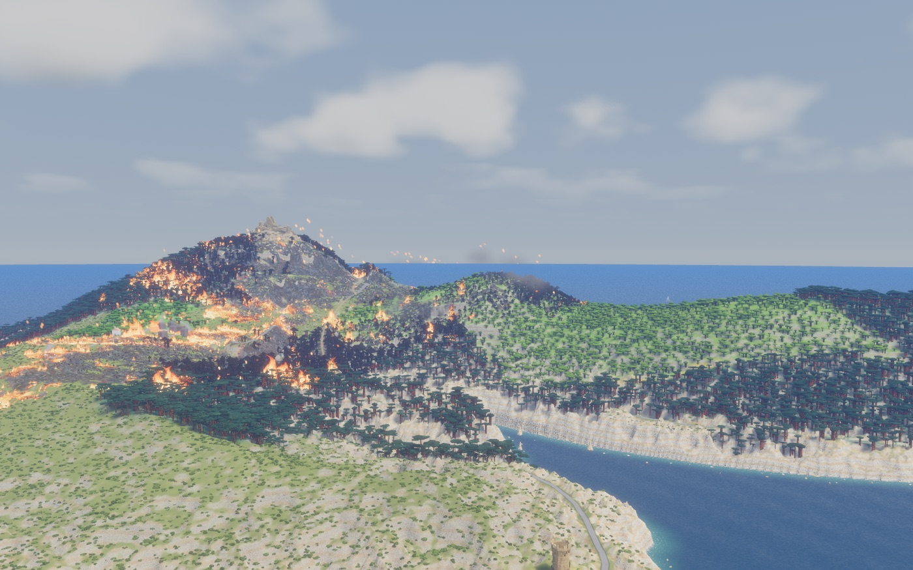
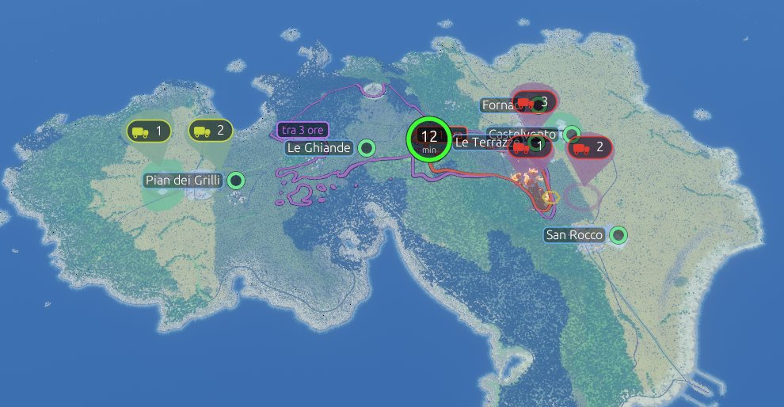
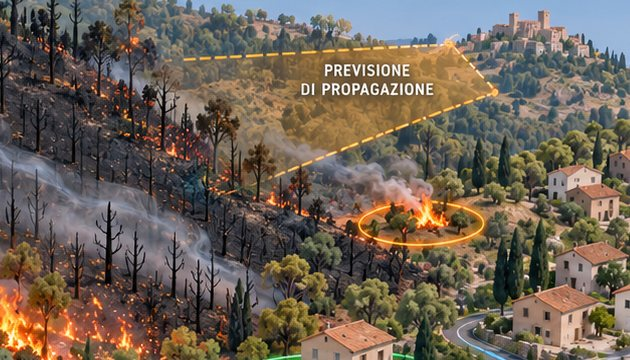
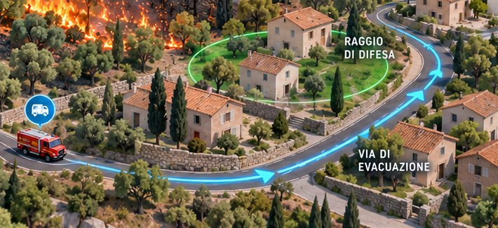
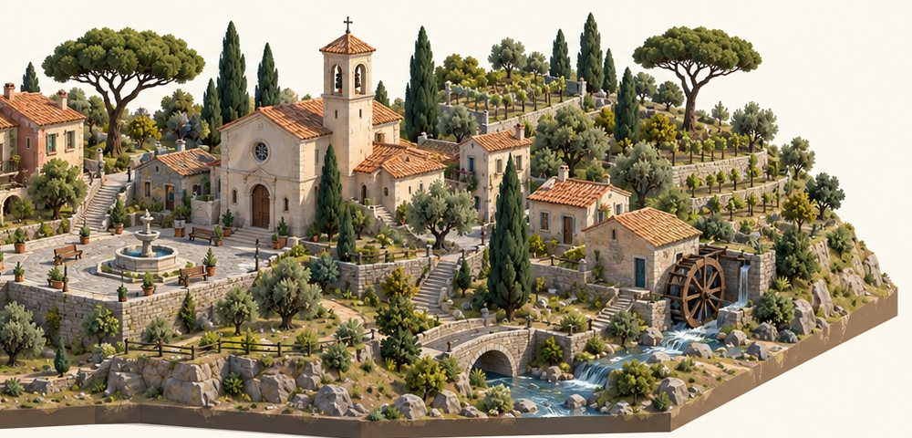

1
Impara dal tutorial
Il primo giorno una volontaria ti guida: conosci le squadre, leggi la mappa e capisci quanto tempo resta.
Un incendio minaccia i borghi dell’isola. Hai poche ore, una previsione e tre squadre di vigili del fuoco: decidi dove mandarle e chi evacuare.


Il fuoco si propaga come nella realtà, con vento, vegetazione e pendenza. Tu hai il ruolo di chi, in protezione civile, deve scegliere sotto pressione.

Il primo giorno una volontaria ti guida: conosci le squadre, leggi la mappa e capisci quanto tempo resta.

Fermi il tempo e chiedi all’esperto dove arriverà il fuoco: le linee mostrano il fronte tra un’ora e tra tre.

Trascina le squadre sugli esagoni da 500 metri e decidi quale borgo evacuare. Alla fine ricevi le stelle e la classifica.
Dietro la mappa c’è lo stesso modello di propagazione degli incendi usato nella ricerca. Il gioco lo trasforma in un’esperienza per capire perché le scelte di protezione civile non sono mai semplici.
